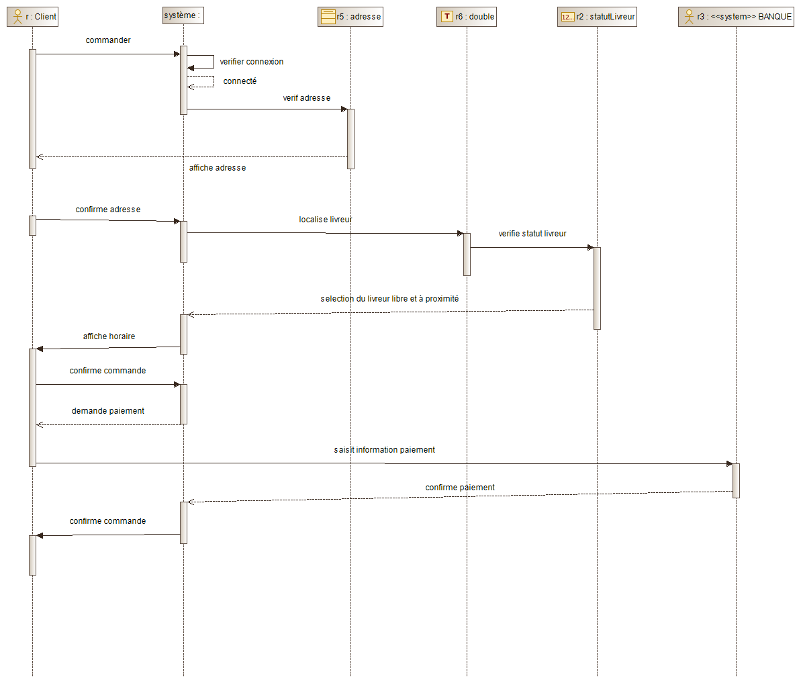

Ce site est une site réalisé dans le cadre du projet 4 d'OpenClassRooms. Me contacter : alexandrarochette40230@gmail.com
La toute jeune startup Express Food ambitionne de livrer des plats de qualité à domicile en moins de 20 minutes grâce à un réseau de livreurs à vélo.
Nous allons ensemble découvrir les étapes de création de votre base de données au travers de différents schémas :
- Diagrammes de cas d’utilisation (création d’une commande, ajout d’un plat du jour, livraison d’une commande)
- Diagramme de classes
- Diagrammes de séquences (création d’une commande, ajout d’un plat du jour, livraison d’une commande)
- Modèle de données
Puis, vous découvrirez la base de données avec des données fictives
Le diagramme de contexte

cas utilisation n°1 : création d'une commande
cas utilisation n°2 : Ajout d'un plat
cas utilisation n°3 : livraison d'une commande
diagramme de classe
diagramme de séquence n°1 : création d'une commande

diagramme de séquence n°2 : ajout d'un plat

diagramme de séquence n°3 : livraison d'une commande

modèle physique de données